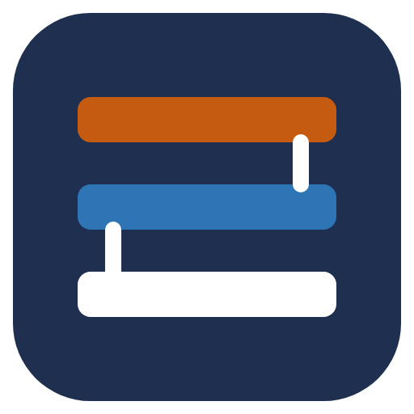

Main courante
Tronc principal · liaison entre services
1. Responsable
2. Service
3. Main courante
Bonjour, qui prend le poste ?
Paramètres
Changer de responsable
1. Responsable
2. Service
3. Main courante
Aujourd'hui
Consulter le journal des observations
Récap du mois
Main courante
Tronc principal
Saisie
Observations
Récap du mois
Observation
Changer
Service en cours
Imprimer
Importer
Exporter la journée
Exporter le mois
Paramètres
Nom du poste
Affiché à côté de chaque enregistrement pour savoir d'où vient la saisie.
Dossier des données
Choisir…
Pour partager la main courante entre plusieurs postes, choisissez un dossier sur un partage réseau commun.
Responsables
Ajouter
Liste commune à tous les postes qui utilisent le même dossier.
Version
Dossier des mises à jour
Pour mettre à jour tous les postes, déposez le nouvel installateur (Liaison-Installation-x.y.z.exe) dans ce dossier.
Ouvrir le dossier
Annuler
Enregistrer
Annuler
Valider
Nouvelle observation
Importante
Ctrl+Entrée pour enregistrer
Annuler
Ajouter
Plus tard
Installer